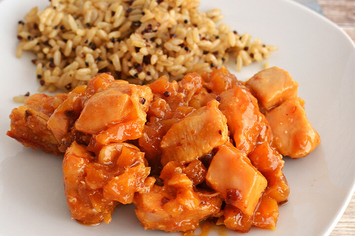

Apricot Chicken Chops
Actually my favorite dish

Goes great with asparagus and mashed potatos
Ingredients
- 1 tablespoon olive oil
- 4 (1 inch thick) bone-in pork chops
- salt and pepper to taste
- 1 cup apricot jam
- 1 cup Catalina salad dressing
- 1 (1 ounce) package dry onion soup mix
- 1 garlic clove, crushed
Steps
-
Preheat oven to 400 degrees F (200 degrees C).
-
Heat oil in frying pan over medium-high heat. Season pork chops with salt
and pepper; cook 2 to 3 minutes per side until well-browned.
-
Stir jam, salad dressing, onion soup mix, and garlic together in a bowl until well-
blended. Place chops in a 9x13 inch baking pan lined with foil, and cover with apricot
mixture.
-
Bake in preheated oven approximately 40 minutes, until internal temperature has
reached 145 degrees F (63 degrees C), or pork is no longer pink in the center.